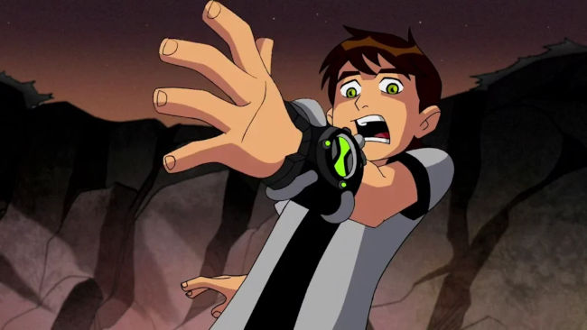
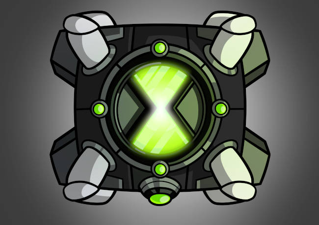

Como Tudo Começa
a Historia começa quando um garoto de 10 anos, junto com sua prima e seu avó vão acampar numa floresta e acaba encontrando um relogio que mudaria o rumo da sua vida para sempre.
A Arma Mais Poderosa do Universo
o omnitrix a arma mais poderosa do universo, não que tenha sido feito com esse proposito, mas é constantemente cobiçado por criaturas maléficas que buscam o seu poder para usa-lo para o mau. o omnitrix permiti ao seu usuario se transformar em varias especies alieniginas diferentes, podendo ter augumas limitações pra quem não conhece seus comandos.